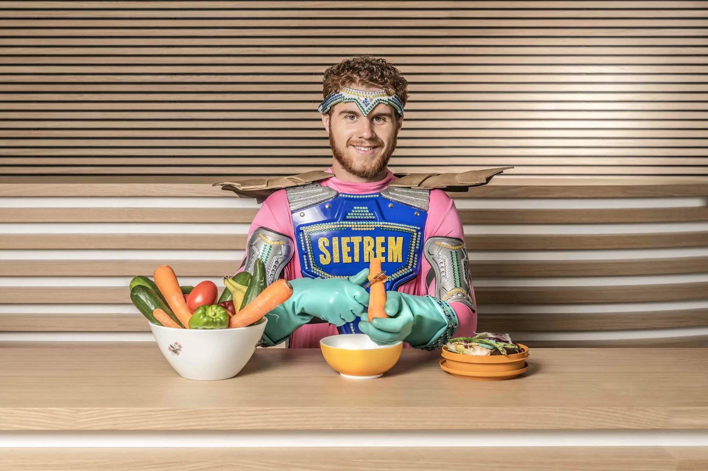
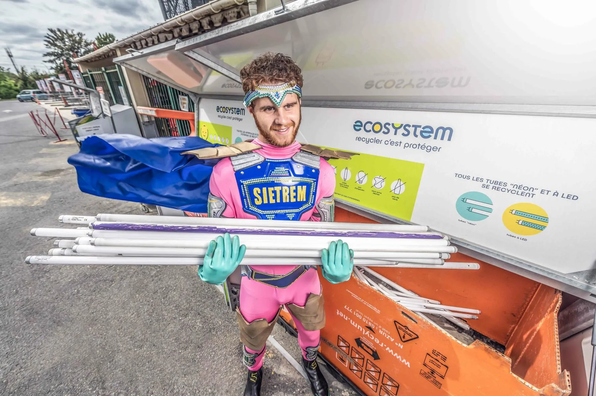
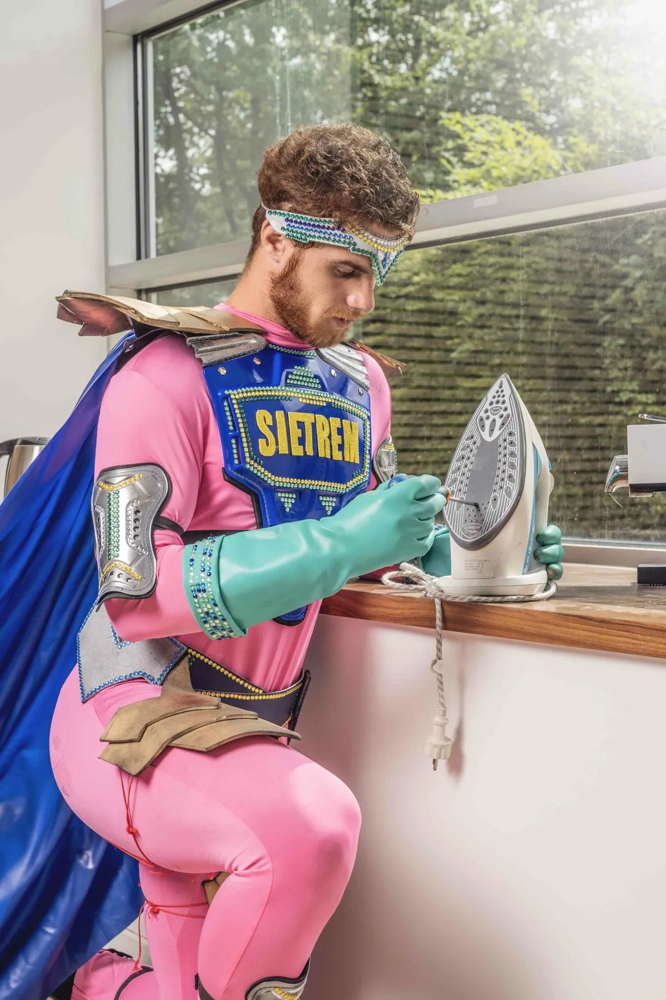
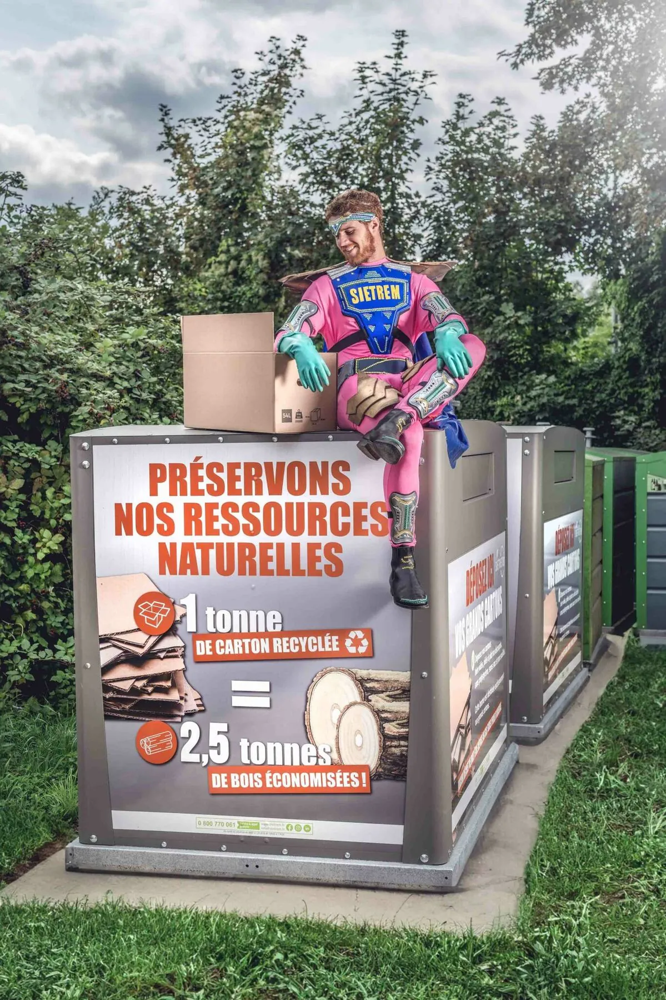
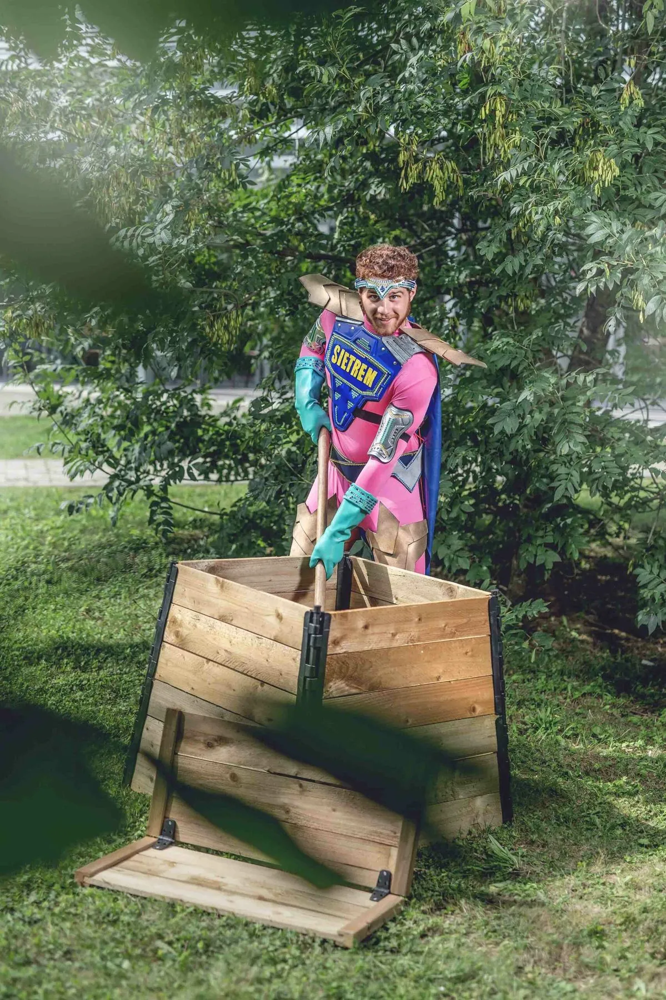
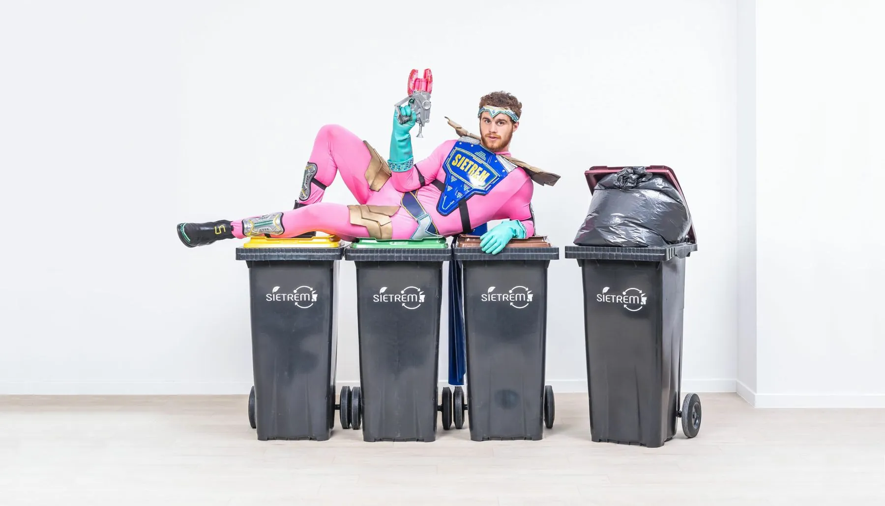
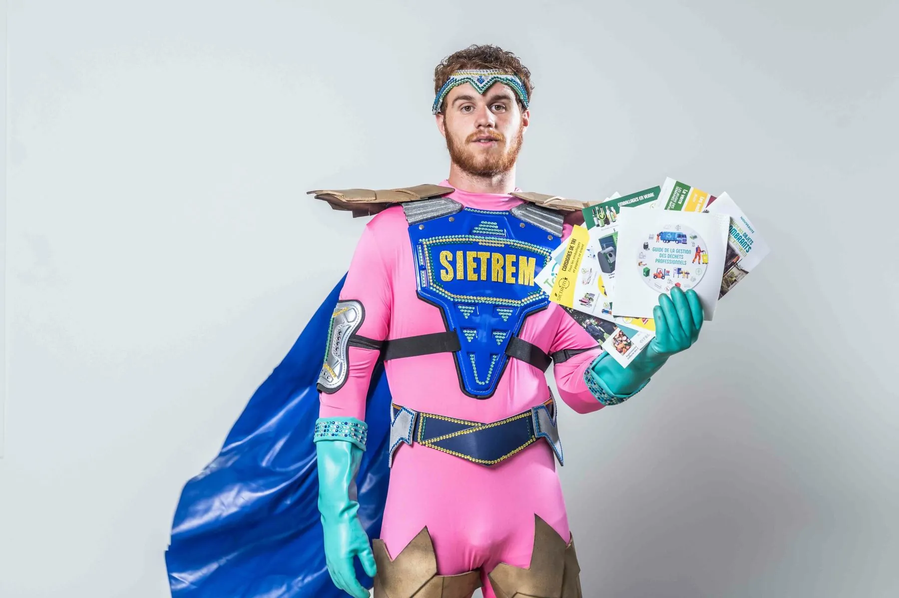

Un syndicat public de gestion des déchets touche tout le monde. Et reste pourtant invisible.
Un syndicat public de collecte des déchets, 31 communes, 315 000 habitants. Un service que tout le monde utilise, derrière une image datée et froide, sans récit, qui n'avait jamais touché son cœur de cible, les 35-64 ans. Au pilotage côté SIETREM, je refuse la pédagogie descendante et je pose une saga : les habitants qui trient deviennent les super-héros du quotidien, et chaque geste de tri devient un pouvoir.
Une plateforme, mais plusieurs voix, une par public. Complice avec les habitants, ludique avec les enfants, sérieuse et chiffrée avec les élus, concrète avec les professionnels. La même marque, le bon ton à chaque fois.
Derrière, un double enjeu. Politique : fédérer 31 communes et leurs élus derrière une identité commune. Sociétal : faire progresser le tri pour de vrai.
« Pas besoin de super-pouvoirs pour faire un super tri. »
Un univers de super-héros décliné en saga : des trieurs ordinaires saisis comme des figures héroïques, une série photo dédiée, des codes graphiques qui font d'un geste banal un acte fort. Le tri n'est plus une contrainte, c'est une posture.
J'ai conçu et coordonné une identité complète, de A à Z : logo, charte, système graphique. Au cœur, le nouveau site et son application.
Et elle vit partout : habillage des camions de collecte, signalétique des déchetteries, affichage urbain, magazine dans chaque foyer, plaquettes. De l'écran à la benne, une seule cohérence, tenue sur trois ans.
La leçon dépasse les déchets. Un sujet qu'on subit peut devenir une marque qu'on suit, à condition de lui trouver l'angle juste et de le tenir partout. C'est ce que je viens faire, quel que soit le secteur.
Au centre : les super-héros du tri.
De l'écran à la benne
Site & appli · camions · déchetteries · affichage urbain · magazine · plaquettes
Le même univers, le bon ton pour chaque public.






